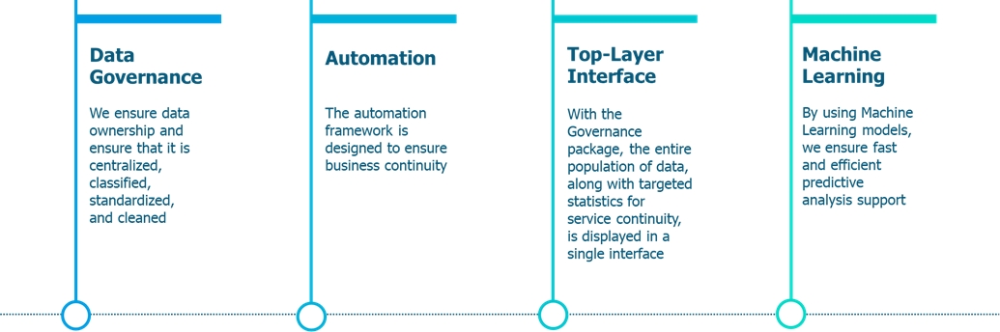
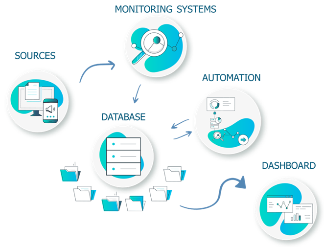
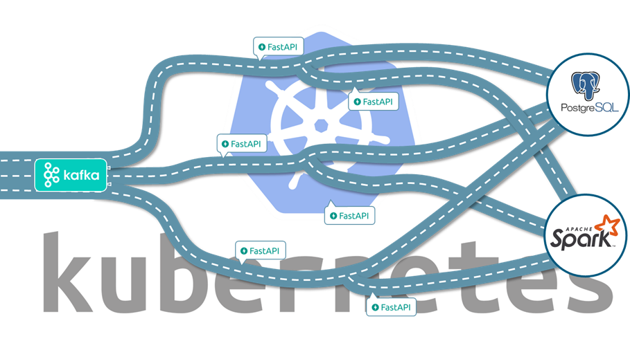
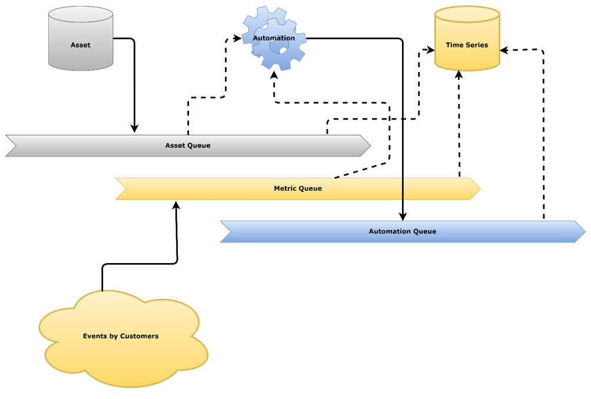
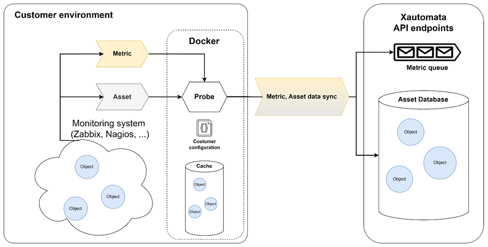

High Level Documentation
The Xautomata platform is designed to allow the ingestion, management and distributed processing of data on large datasets and large clusters by leveraging distributed software and architectures of Apache Kafka, Apache Spark, FastAPI, Postgres clusters, on top of the Kubernetes platform
The document describes the basic concepts behind the platform as well as the high level architecture.
Overview
Xautomata is a product that brings together four main modules as shown in the following image.

XAutomta takes care of giving back data governance to the customer itself, through the data governance module the data distributed on a heterogeneous landscape of sources and different monitoring software, are retrieved from integrations and centralized in a single centralized database.
The data centralized in one place allows to build a top-layer interface that allows to have a direct visibility on all its asset through simple and rich widgets.
The same data is used by the Automation engine to implement autonomous operations on the asset through the proprietary automation system.
In addition, a set of tools based on Machine Learning algorithms is provided to provide suggestions to the customer to improve the performance of their asset and save on costs.

As depicted in the image above, everything is done through a simple logical diagram of relationships. Third party monitoring systems retrieve data from various sources, proprietary XAutomata integrations retrieve data from monitoring systems, performing a job of cleaning and formatting the data, and then inserting the data into our centralized database.
The two key components, automation and dashboard, are then connected to the database.
The purpose of the dashboard is to give full visibility on the totality of the customer's perimeter, and the following verticals are currently supported:
- Multi-cloud cost management
- IT infrastructure
- Network
- Support Service KPI
The purpose of Automations is to streamline business processes, ensuring their execution. Monitoring of components, repair actions, cleaning from false positives, preventive maintenance notices are all operations supported by the automation system.

The technologies on which the solution is based are:
- The entire product is contained in a Kubernetes environment
- Incoming data is loaded via Kafka queues
- The database is based on temporally partitioned PostgreSQL tables
- The state machines are run in a Spark environment
- Any access to data is managed via full Rest APIs written with the FastAPI framework
High Level Data Architecture
One of the main objectives of the Xautomata platform is to enable efficient, fast and consistent data collection and management regardless of the nature of the data collected.
Synchronization and data collection are handled differently for Asset information and metric data. Metric data is collected via queues while asset data is synchronized to a database using a local cache. This architecture allows efficient management of relational data (assets) and allows an event-based architecture implemented via the various queues.
This allows to observe any changes to relevant information (metrics and changes to local asset data) in the queues. This choice was made to allow the automation engine to be event-driven by change events, thus making it more efficient and less dependent on the database structure.
The automation engine works directly by reading the various queues, minimizing dependence on the central database and maximizing scalability.

Fig.1 - Conceptual Architecture
As explained in Figure 1, the architecture provides for the flow of data into the system in the form of Asset (data relating to the objects that the system will consider), Metric (measurements on such objects) and Automation (data relating to the central automation process of the system).
Data Acquisition Architecture
In this section, we describe how data is collected and shared with the Xautomata system.
Glossary:
- Assets represent the entities that must be tracked by the Xautomata system..
- Alerts define the measurements (instance of metrics) observed by Xautomata.
- The probe is the Xautomata component that observes the assets and alerts of an environment.
- The environment (customer) is the environment observed by the Xautomata probes.
The probes retrieve asset and alert information from the customer environment, collect it and send it to Xautomata. The data is sent in different modes: alert mode, alert+asset and synchronization. Depending on the mode, specific operations will be performed with the data.
A minimal copy of the data sent to the Xautomata database is duplicated in a local cache with the probe. Its use is different for each operating mode and minimizes interaction with the Xautomata platform API.
The probes are managed and distributed as local scripts as well as Docker images to run in the customer environment via Docker or in a Kubernetes cluster.

Fig.2 - Data Acquisition Architecture
Automation Engine
The automation engine of XAUTOMATA is the beating heart of the platform, designed to intelligently and autonomously manage complex business processes that exceed the capabilities of traditional RPA and BPM solutions. At its core operates an architecture based on a behavioral agent model, where each entity or stage of a process is interpreted as a dynamic state. The approach is distinctly declarative: users define operational rules and business logic through the proprietary XAL language, and the system autonomously orchestrates execution, making dynamic decisions and automatically managing resource allocation in real-time in response to specific events.
Each process is broken down into "automata," intelligent and independent agents capable of communicating with one another, generating new automata, and making decisions based on local and shared data. This modular and highly scalable model, supported by a cloud-native infrastructure on Kubernetes, enables the coordination of a high number of actions, the integration of third-party systems, and the management of temporal dependencies with unparalleled responsiveness. Essentially, XAUTOMATA directly automates the rules that govern operations, not just linear flows, making the solution extremely flexible, adaptable to changes, and capable of creating a living digital representation (Digital Twin) of the processes.
Dashboards
XAUTOMATA allows, through data published in a dashboard. The Dashboards are customizable by the user through a series of available widgets. The functionality of the individual widgets is described in the documentation at https://xautomata.github.io/User-Interface-Manual/